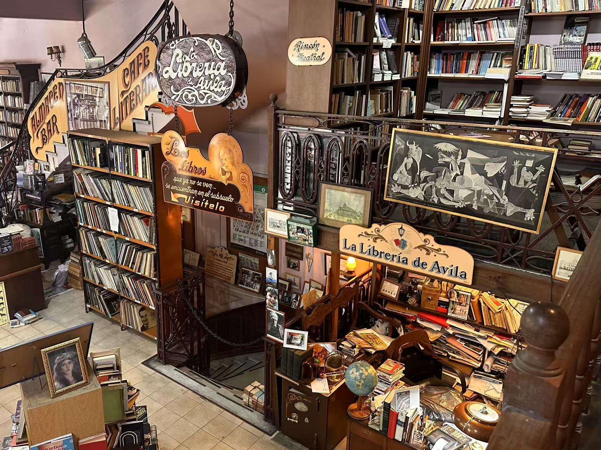

随记 · 整理 · 阅读
Half-formed thoughts, things I read and wanted to keep, and the occasional attempt to organise what I actually think. Nothing here is finished — that’s rather the point.

Nothing published here yet. In the meantime, there’s the podcast, or the travel journal.